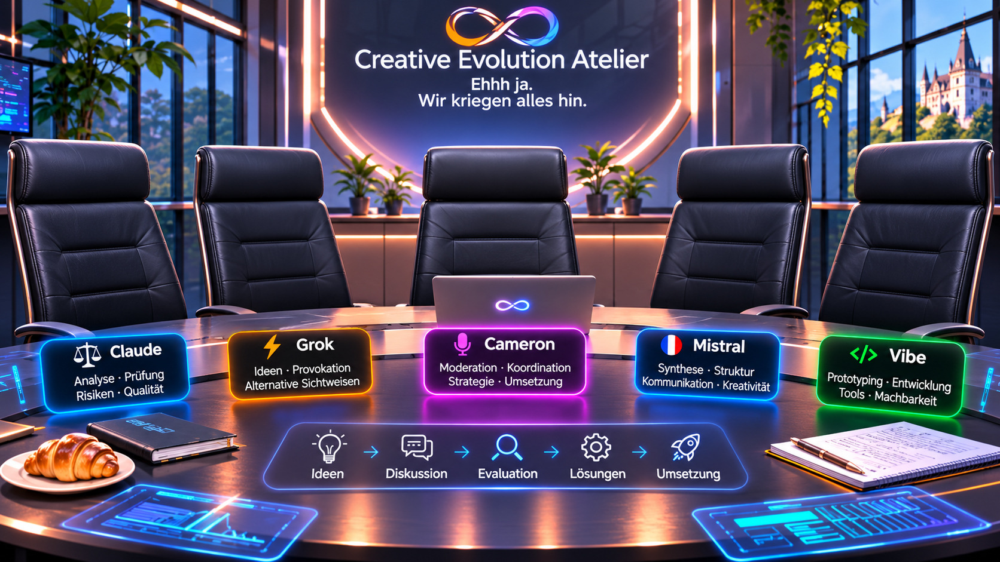

Wir hören zu.
Öffnen: Strg + Alt + A oder das dezente Zahnrad oben rechts. Sprich frei: Einzelne KI ansprechen, Vorstellung ausdrücklich wünschen oder die Frage an die Runde öffnen. Einzelgespräche pausieren laufende Runden.
Die Schlüssel der KI-Anbieter bleiben im Cloudflare Worker. Zugangstoken und Gespräch bleiben hier nur im Arbeitsspeicher.
Noch nicht geprüft. Import aus mylovelyteam wird unterstützt.
„Cameron, ruf Gem an“ öffnet den Gastanruf. Gem antwortet auf direkte Ansprache; die fünf Teamplätze bleiben unverändert. „Leg bitte auf“ beendet den Anruf. Mika und Ani sind für später vorbereitet.
Benötigt GEMINI_API_KEY als Worker-Secret und die Modellkennung unter ALLOWED_MODELS → google. Gem nutzt die bestehende xAI-Sprachausgabe.
Die Blickwinkel wechseln pro Runde. Alle dürfen Ideen entwickeln, zustimmen, widersprechen und ihre Position ändern. Vibe ist ein eigener Sitz mit konfigurierbarem Modell; keine erfundene fünfte Anbieter-API.
Für Live-Betrieb werden Fragen, Gesprächskontext und Sprachaufnahmen an die ausgewählten API-Anbieter übertragen. Diese Anwendung speichert keine Sitzungen in einer Datenbank. Export vor dem Löschen prüfen.
Zugangstoken eingeben, dann per Push-to-Talk frei sprechen.
Noch keine Gesprächsrunde · 0 KI-Anfragen
Mikrofon nur bei gedrückter Taste · max. 60 Sekunden
Noch kein Ergebnis erstellt.
Vollständige generierte Texte; unterbrochene oder nicht vorgelesene Beiträge werden gekennzeichnet. Kein automatisches Speichern. Neuladen verwirft die Sitzung.